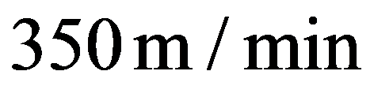
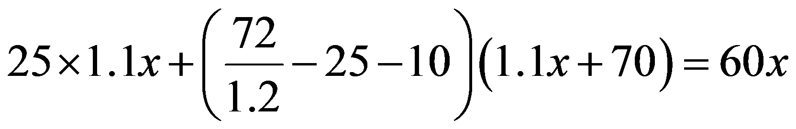
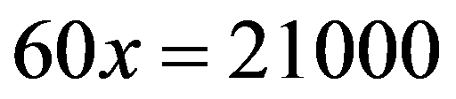
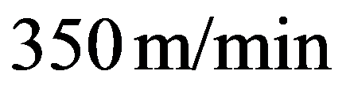

2026年北京市中考数学试卷 · 数学解答题 第22题 · 对应解析
22. 在一次机器人跑步比赛中，自主导航机器人（以下称A类机器人）与遥控机器人（以下称B类机器人）在同一赛道比赛，统一排名．为鼓励自主导航技术研发，主办方制定了以下计算完赛成绩的规则：
·A类机器人的完赛成绩为从起点跑到终点的时间（包含途中维护时间）；
·B类机器人的完赛成绩为从起点跑到终点的时间（包含途中维护时间）的倍．
已知比赛中，一台A类机器人全程保持匀速，途中没有维护，完赛成绩为；一台B类机器人起跑后，前保持匀速，速度是这台A类机器人的倍，之后原地维护，维护后匀速跑至终点，速度比维护前增加了，完赛成绩为．求这台A类机器人的速度和此次比赛从起点到终点的路程．
【答案】A类机器人的速度为

，比赛起点到终点的路程为【解析】
【分析】根据赛道总路程不变，设A类机器人速度为 ，得出全程路程；再根据B类成绩规则，由公示成绩算出它含维护的实际总耗时，拆分出两段行驶时长与对应速度，将两段行驶路程相加，与总路程相等建立方程求解．
，得出全程路程；再根据B类成绩规则，由公示成绩算出它含维护的实际总耗时，拆分出两段行驶时长与对应速度，将两段行驶路程相加，与总路程相等建立方程求解．
【详解】设这台A类机器人的速度为，
由题意可知，

，解得，
所以

，答：这台A类机器人的速度为

，此次比赛从起点到终点的路程为．